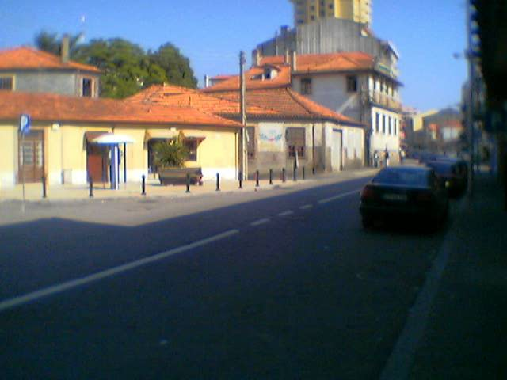
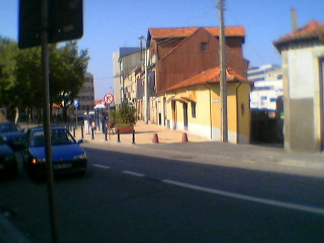
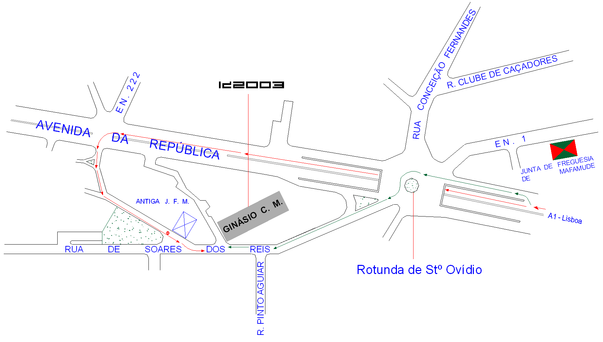

how to come to id2003
By car
Coming from the north (Porto, Braga, Vigo)
You should be at the A1 direction Lisboa. Passing the Arrábida Bridge ("Ponte da Arrábida") you drive for 5 more kilometers. At km 297 you leave the highway at the exit "Gaia (Stº Ovídeo)." Pick a route then.
Coming from the south (Aveiro, Lisboa)
You should take the A1 (NOT the IP1) direction Porto, via Arrábida Bridge ("Ponte da Arrábida"). At km 297 you leave the highway at the exit "Gaia (Stº Ovídeo)." Pick a route then.
Green route (see map)
300m after you take the road at your right, a small elevation until a roundabout, "Rotunda de Stº Ovídeo." You enter the roundabout, and exit in the 4th street, "Rua de Soares dos Reis". Go on for another 150m, and the party place's street is the first on your right, "Rua do Telhado", a very tiny street.
Red route (see map)
Continue on this exit, you will pass a small tunnel and at the end you find a radar controlled stoplights (don't pass 50 km/h otherwise they turn red!). Continue in this street ("Avenida da República") until the next stoplights, where you should turn to the left. You will find then a accentuated elevation – "Rua Joaquim Nicolau de Almeida" – that ends at "Rua de Soares dos Reis". Right away you turn to the left the tiny "Rua do Telhado", where the party place is.
By train
Wherever you are in Europe or Portugal, it's not hard to come to the party by train. Take the Intercity or Alfa Pendular from Lisboa or Porto and get out at V.N.Gaia – Devesas. All trains stop there, so you don't have to worry about which train you take. You can take a cab – there should be plenty of them just outside the station – or you can take bus nr. 51 direction Stº Ovídeo. Just leave at the final stop. The party place is 3 min away from it.
By plane
For those of you that can actually afford to come by plane, you have to book your flight to Oporto Airport. There, you can either take a cab or you can take a shuttle, the "Aerobus" – if you fly with TAP Air Portugal, just show the driver your flight ticket and you can ride onde day for free in Porto and V.N.Gaia; otherwise, buy a day ticket inside the bus – which takes you to the very heart of Porto. Then take a bus (32, 82 or 84) to Stº Ovídeo – ask around for directions, we Portuguese are nice people! – and get out at that roundabout ("Rotunda de Stº Ovídeo") – ask the driver to tell you when to get out. From there, should be easy to get to the party place with the map.
By helicopter
Now, we are not joking. You can actually come to some parts of the city by helicopter. Quite close to the party place there is a super market that is giving away helicopter trips… :) If you want to ride an helicopter – and if you want to spend a lot of money – contact us in advance and we make an arrangement for you!
You can find now some pictures and the map of the party place and the surrounding area. If you have any questions or you are lost don't hesitate to give us a call.
Have a safe trip. See you at InérciaDemoparty 2003!



